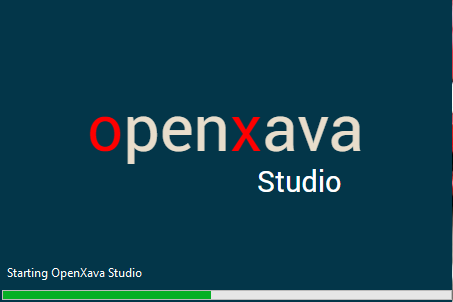

Between July 2020 (OpenXava 6.4) and January 2026 (OpenXava 7.6.4), the official IDE for working with OpenXava was OpenXava Studio. OpenXava Studio was a custom version of Eclipse to help those starting with OpenXava who didn't come from the Java world to get started more easily. It allowed something unique in the Java world: you could download a zip, unzip it, click on an .exe and start working, just like that. There was no need to download Java, configure plugins, install a Tomcat, configure environment variables, nothing like that. One click and you are ready to work.

However, from February 2026 onwards, OpenXava Studio was discontinued, starting a more IDE-agnostic approach, where you can use OpenXava with the IDE of your choice. In tutorials and documentation, IntelliJ is now used because it is the most popular IDE among Java programmers.
Therefore, starting with OpenXava 7.7, it is advisable to use IntelliJ instead of OpenXava Studio. IntelliJ also works with older versions of OpenXava, although if you want to use OpenXava Studio with older versions of OpenXava, it is still available for download on SourceForge.
Migrating a project made with OpenXava Studio to IntelliJ requires nothing at all, since OpenXava projects are standard Maven projects. Simply open your OpenXava project with IntelliJ and if it asks you what type of project it is (it will ask if you want to import from Eclipse or Maven), say Maven. Your project will be recognized and will work perfectly in IntelliJ.